The Words That Bring Life to Language!
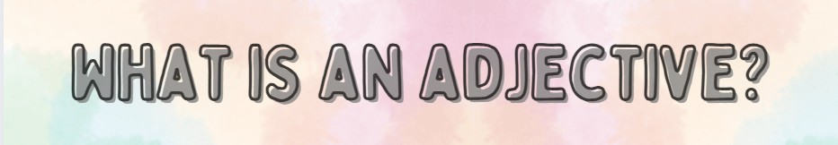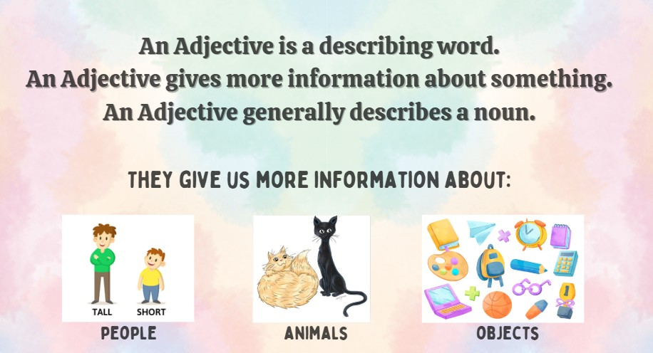
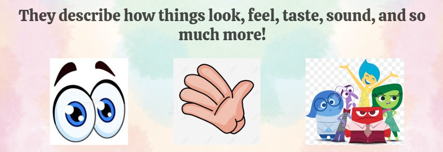
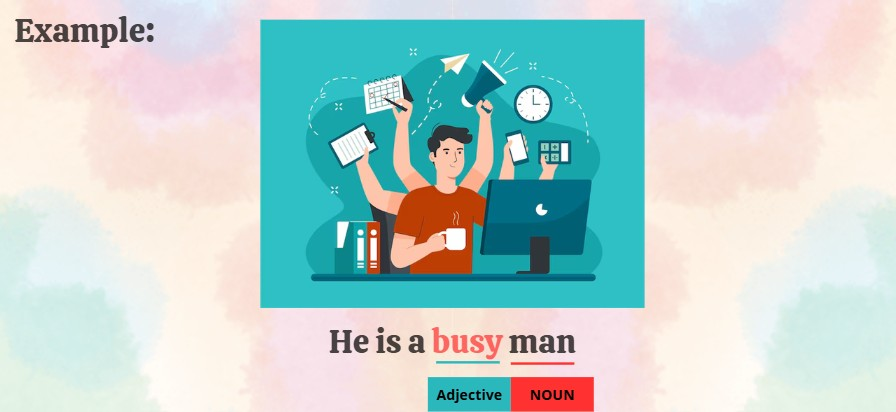
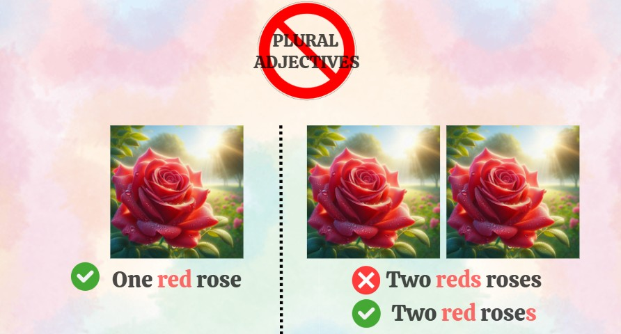
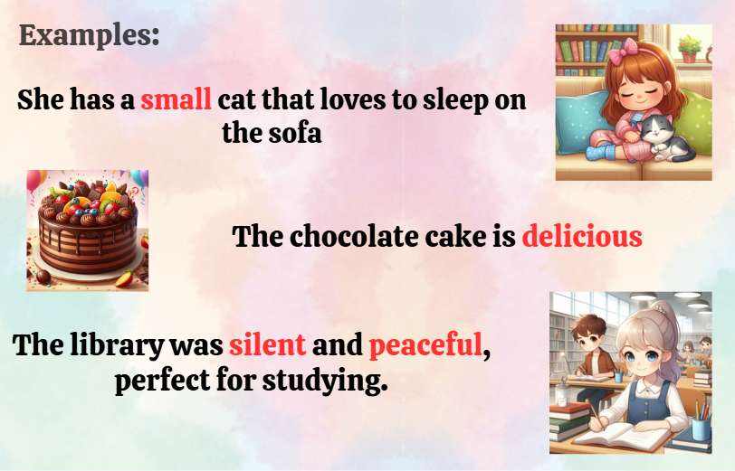
Adjectives are everywhere, making our language vibrant and expressive. Keep exploring, and you’ll see the power of these words in every sentence you write and speak!
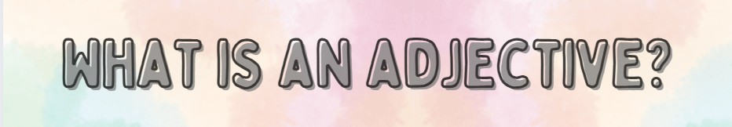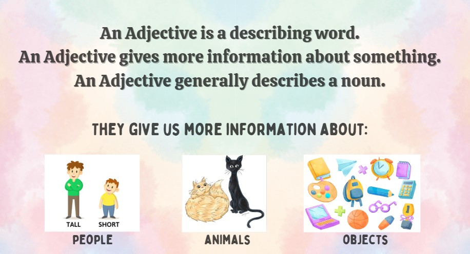
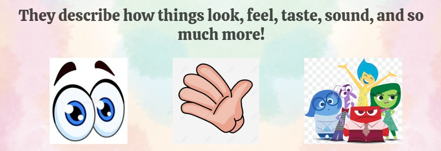
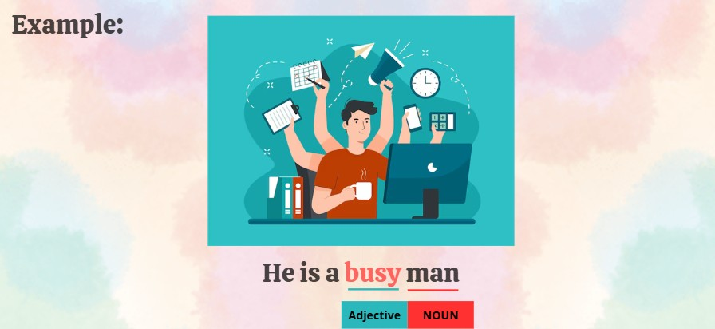
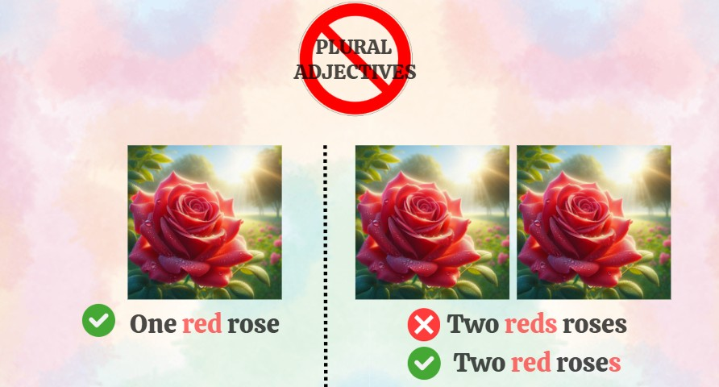
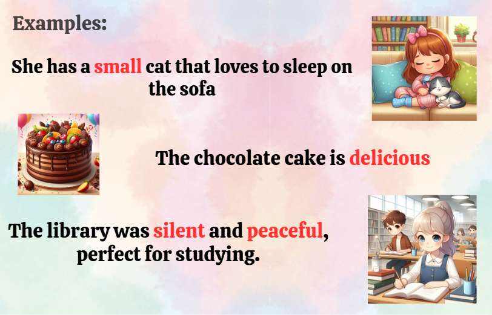
Adjectives are everywhere, making our language vibrant and expressive. Keep exploring, and you’ll see the power of these words in every sentence you write and speak!
Visualiza el siguiente video sobre adjetivos opuestos, practica la pronunciación y deletreo.
Nota: El video muestra una lista de adjetivos opuestos en inglés con su pronunciación.
Tomado de Adjetivos - Opuestos en inglés [video] Woodward English, 2019 https://youtu.be/d2RuO_fseyM?si=OPhhf70U6gCi9fyt
Comparative and Superlative Adjectives
Indicaciones:
Teniendo en cuenta los tipos de adjetivos en inglés (comparativos y superlativos) que aprenderás en las siguientes clases, realiza un cuadro comparativo utilizando la herramienta digital Canva. En él deberás:
1. Sintetizar la información sobre las reglas gramaticales de formación de ambos tipos de adjetivos (palabras cortas, largas, irregulares).
2. Incluir ejemplos claros de cada tipo (mínimo tres por categoría).
3. Agregar imágenes o íconos ilustrativos que refuercen visualmente los ejemplos.
Herramienta sugerida:
Producto final:
El cuadro comparativo digital que podrás exportar como imagen o PDF se debe subir al siguiente enlace:
https://padlet.com/contrerasmaria116/comparative-table-4ywlbg3zgak7lmym
Ten en cuenta los criterios de la siguiente Rúbrica.
| 4 Excelente | 3 Satisfactorio | 2 Mejorable | 1 Insuficiente | |
|---|---|---|---|---|
| Contenido gramaticaldel tema principal | Presenta correctamente las reglas gramaticales de ambos tipos de adjetivos. (4) | Presenta las reglas, aunque con alguna omisión o leve error (3) | Incompleto o con errores frecuentes en las reglas gramaticales. (2) | La información es incorrecta o no está presente. (1) |
| Ejemplos/ Conceptos | Incluye al menos 3 ejemplos correctos y claros por tipo de adjetivo (4) | Incluye ejemplos adecuados pero le falta uno o tiene algún error menor (3) | Pocos ejemplos o varios con errores gramaticales. (2) | No incluye ejemplos o los que hay son incorrectos. (1) |
| Organización y claridad del cuadroy estructura | La información está muy bien organizada, clara y fácil de comparar. (4) | Buena organización con ligeras dificultades de lectura o comparación. (3) | Organización confusa que dificulta la comparación entre elementos (2) | Desorganizado o ilegible; no permite comparar fácilmente. (1) |
| Creatividad y diseño visual | Diseño atractivo, uso adecuado de colores, tipografía, íconos o imágenes. (4) | Diseño visualmente claro pero con poca variedad en recursos gráficos. (3) | Poco uso de recursos visuales o diseño muy básico. (2) | No hay esfuerzo visual o no se usó Canva adecuadamente. (1) |
| Ortografía y redacción | Sin errores ortográficos o gramaticales en los textos. (4) | Uno o dos errores menores. (3) | Varios errores que afectan la comprensión. (2) | Muchos errores que impiden entender el contenido. (1) |
Obra publicada con Licencia Creative Commons Reconocimiento Compartir igual 4.0